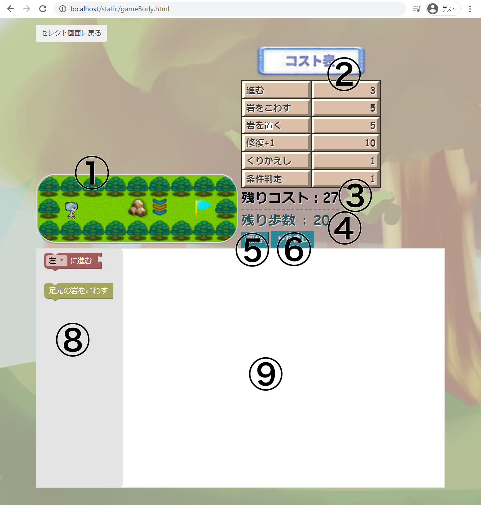
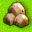
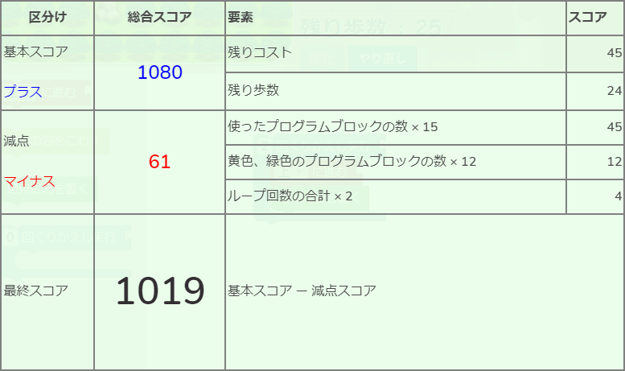
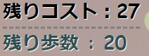

基本の遊び方
「ぶろっくるん」では、あなたはキャラクターには直接関わることができません。
キャラクターがゴールに行けるように、画面上のカーソルをうまく操ってステージを書き換える
真新しいルールのゲームです。
目次
画面のつくり

-
ステージマップ
問題のぶたいとなるステージの全体図です。
青とオレンジ色の「カーソル」や、水色の「キャラクター」がいます。
このキャラクターをゴールへたどり着かせるのが、このゲームの目的です。ゴールは、水色のハタの場所です。
-
コスト表
あなたが置くブロックに設定されている「コスト」の表です。
-
現在のコスト
プログラム (8.) の、今のコストを表示しています。
プログラムブロックを置いたり消すと、それに応じて計算し直されます。
-
残り歩数
キャラクターが移動できる残りの回数です。
キャラクターが動き始めると、一歩ごとに1減っていきます。
0になるまでにキャラクターがゴールにたどり着けないと、ゲームオーバーになってしまいます。
-
開始ボタン
カーソルが動き始めます。
カーソルの動きが止まると、キャラクターが自動で動き始めます。
詳しくはこちら
-
やり直しボタン
カーソルやキャラクターが動いている間に押すと、まだ動いていないときの状態まで戻ります。
-
プログラムブロックのリスト
このステージで使えるプログラムブロックのリストです。
-
プログラム作成エリア
ここでプログラムを作ります。
このゲームでは、あなたはキャラクターではなく、カーソルの動きをプログラムします。
マップ上にあるもの
| 名称 |
見た目 |
とくちょう |
| カーソル |
|
行く先が木でも床でも、移動できます。
プログラム次第で、岩をこわすことなどもできます。
|
| キャラクター |
|
一定の決まりにしたがって歩き続けます。
|
| 床 |
|
キャラクターもこのマスに入れます。
|
| 木 |
|
キャラクターはこのマスに入れません。
カーソルのプログラムでも壊せません。
|
| 岩 |
 |
キャラクターはこのマスに入れません。
カーソルのプログラム次第で、こわすこともできます。
|
| ゴール |
|
ステージのゴールです。
キャラクターをここに向かわせましょう。
|
| バネ |
|
このマスを踏んだキャラクターは、
木や岩でも1マスなら飛びこせます。
カーソルはバネを踏みません
|
他にもなんかいろいろあります
ゲームの流れ
全体の流れ
- プログラムを作成する
- 開始ボタンを押す
- カーソルがプログラムに従って動く
- キャラクターが動き始める
1.プログラムを作成する
プログラム作成エリアを見てみましょう。
以前に選んだことのないステージでは、真っ白なキャンバスが表示されます。
左側のプログラムブロックのリストから、ブロックをひとつ置いてみましょう。
ブロックをクリックしたまま、
右側にカーソルを移動してマウスボタンを離します。
これによって、ブロックを1つ置けました。
コスト表を見てみましょう。「進む」に対応する数は3です。
じっさいに、現在のコストが0から3になりました。

現在のコストが最大のコストを超えない限り、ブロックをいくつでも置くことができます。
また、ブロックを置くとき、すでにあるブロックの前後につなげて置くことができます。
2.開始ボタンを押す
自分がつくったプログラムでカーソルを動かすには、開始ボタンを押してください。
- プログラムの「現在コスト」が「最大コスト」をこえて、赤色で表示されている
- 繰り返しの回数が合計で50以上になっている
- プログラムブロック「判定する条件」の右上に、条件のプログラムブロックがついていないものがある
上のどれかひとつでも当てはまる場合、プログラムを作り直してください、と表示されます。
3.カーソルがプログラムに従って動く
無事プログラムが動き始めました。
カーソルはプログラムブロックを、プログラム作成エリアの一番上にあるものから順番に読み取ります。
たとえば、このプログラムは「左に進む」「足元の岩をこわす」の順に読み取られます。
また、このプログラムは「上に進んで、足元の岩をこわす」ことを3回繰り返して、次に「右に進む」「足元の岩をこわす」の順に読み取られます。
カーソルは、プログラムから読み取った指示をそのまま行動に移します。
あなたは、カーソルの動きを見ている途中で、作ったプログラムの間違いに気づくかもしれません。
やり直しボタンを押すと、カーソルが動き出す前までまき戻ってプログラムを作り直すことが出来ます。
4.キャラクターが動き始める
カーソルがプログラムに従って動いて、全てのプログラムブロックを読み取り終わると、キャラクターが動き始めます。
キャラクターは、向いている方向に一歩ずつ進みます。この間、残り歩数が1ずつ減っていきます。
また、向いている方向に木や岩があって、その方向に進めないことがあります。その場合、このように方向転換します。
-
右に曲がって進めるなら、右に曲がります。
-
右には進めず、左に進めるなら、左に曲がります。
-
右にも左にも進めないなら、真反対を向きます。
キャラクターの動きを予測して、カーソルを操作しましょう。
スコアの基準

セレクトモードでは、ステージクリア時にプログラムの効率のよさを数値化したスコアが表示されます。
-
基本スコア
クリア時に、プログラムの最大コスト－現在コストを「残りコスト」とします。
クリア時のキャラクターの残り歩数と、プログラムの残りコストを掛け算したものが基本スコアです。
この画像の例では、残りコストは (54 - 9) × 24 = 1080 です。
-
減点
以下の数を合計した数が減点になります。
- 使ったプログラムブロックの数を 15 倍した数
-
黄色、緑色のプログラムブロックの数を 12 倍した数
ただし、黄色、緑色のプログラムブロックとは、
- 足元の岩をこわす
- 足元に岩を置く
- こわれるゆかを修復する + 1
の3種類のプログラムブロックのことをいいます。
-
ループ回数の合計を 2 倍した数
〇回繰り返すブロックの〇に入っている数字が「ループ回数」です。
この画像の例では、プログラムブロックが 3 個、うち 1 個が「足元に岩を置く」ブロックです。
また、繰り返しが使われていて、回数は 2 です。よって、
減点は (3 × 15) + (1 × 12) + (2 × 2) = 61 点です。
-
最終スコア
基本スコアから減点スコアを引いた数が最終的なスコアです。
※ただし計算結果が 0 より小さい数になる場合は、最終スコアは 0 点になります。
なお、ストーリーモードでは、スコアは計算されません。